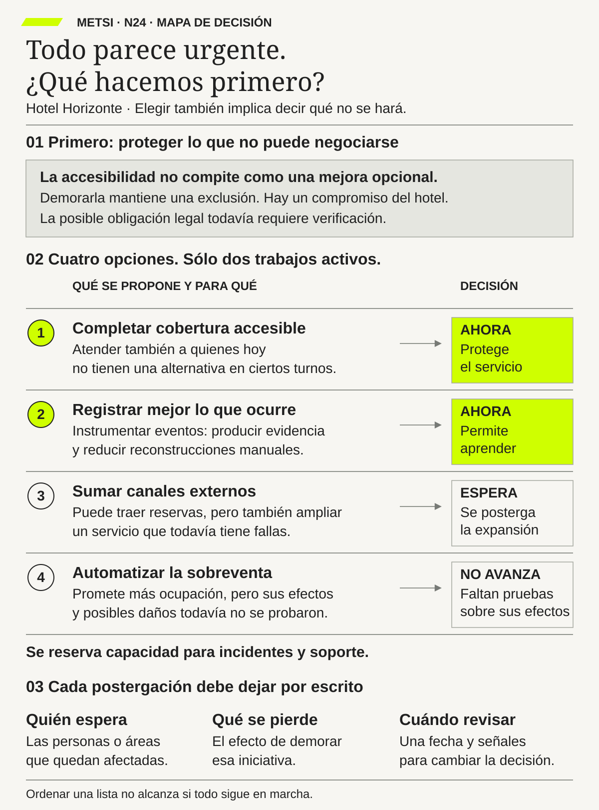

N24 · Todo parece urgente. ¿Qué hacemos primero?Priorizar requiere proteger condiciones del servicio, limitar el trabajo activo y explicar qué espera y cuándo se revisará.
N26 · La reserva está confirmada. La familia todavía no puede entrar.El hotel necesita acuerdos verificables con servicios autónomos y una contingencia autorizada para responder por el ingreso completo.
N27 · Un mensaje válido no alcanza para entregar la llave.Forma, significado, tiempo y acción deben acordarse juntos para que el mismo mensaje no produzca decisiones incompatibles.